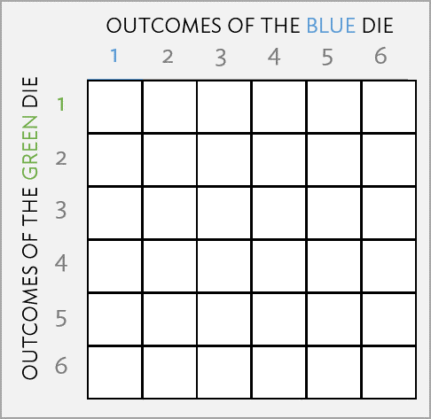
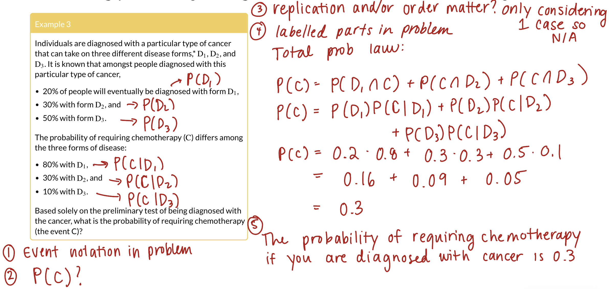

- 1
- Set the seed once, so we get the same “random” rolls every time the slides are made.
- 2
-
Save the number of simulations as
reps, so it is easy to change later. - 3
- One row for every simulation. Each simulation is one roll of the pair of dice.
- 4
-
Each die is a box with tickets 1 to 6.
sample()draws one ticket for every row (n()is the number of rows).replace = TRUEmeans any number can show up on both dice. - 5
-
Start with the table of dice and save the result as
dice_events. - 6
-
AisTRUEwhen the total of the two dice is 7. The==asks “is it equal to?” - 7
-
BisTRUEwhen the green die is a six.
Lesson 4: Rules of probability
Meike Niederhausen and Nicky Wakim
2026-10-07
Learning objectives
Define independence of 2-3 events and decide whether two or more events are independent
Define key facts for conditional probabilities and calculate conditional probabilities.
Calculate the probability of an event using Bayes’ Theorem, Higher Order Multiplication Rule, and the Law of Total Probabilities
Where are we?

General Process for Probability Word Problems
Clearly define your events of interest and mathematically define the goal probability
Translate question to probability using defined events OR Venn Diagram
Ask yourself:
Are we sampling with or without replacement?
Does order matter? (Are the objects distinguishable?)
Use axioms, properties, partitions, facts, etc. to define the end probability calculation into smaller parts
If probabilities are given to you, Venn Diagrams may help you parse out the events and probability calculations
If you need to find probabilities with counting, pictures or diagrams might help here
Write out a concluding statement that gives the probability context
(For own check) Make sure the calculated probability follows the axioms. Is it between 0 and 1?
Learning objectives
- Define independence of 2-3 events and decide whether two or more events are independent
Define key facts for conditional probabilities and calculate conditional probabilities.
Calculate the probability of an event using Bayes’ Theorem, Higher Order Multiplication Rule, and the Law of Total Probabilities
Independent Events
Definition: Independence
Events \(A\) and \(B\) are independent if \[\mathbb{P}(A \cap B) = \mathbb{P}(A) \cdot \mathbb{P}(B).\]
Notation: For shorthand, we sometimes write \(A \mathrel{\unicode{x2AEB}} B,\) to denote that \(A\) and \(B\) are independent events.
- Also note: \[\begin{aligned} \mathbb{P}(A \cap B) = \mathbb{P}(A) \cdot \mathbb{P}(B) & \implies A \mathrel{\unicode{x2AEB}} B \\ A \mathrel{\unicode{x2AEB}} B & \implies \mathbb{P}(A \cap B) = \mathbb{P}(A) \cdot \mathbb{P}(B) \end{aligned}\]
Example of two dice
Example 1
Two dice (green and blue) are rolled. Let \(A =\) event a total of 7 appears, and \(B =\) event green die is a six. Are events \(A\) and \(B\) independent?

Example of two dice: simulating in R (1/2)
Example 1
Two dice (green and blue) are rolled. Let \(A =\) event a total of 7 appears, and \(B =\) event green die is a six. Are events \(A\) and \(B\) independent?
- First, a small simulation with 10 rolls of the two dice
- 1
- Typing a name prints the table. Each row is one simulation.
# A tibble: 10 × 5
sim green blue A B
<int> <int> <int> <lgl> <lgl>
1 1 4 5 FALSE FALSE
2 2 1 1 FALSE FALSE
3 3 5 2 TRUE FALSE
4 4 4 5 FALSE FALSE
5 5 5 4 FALSE FALSE
6 6 6 5 FALSE TRUE
7 7 5 3 FALSE FALSE
8 8 3 6 FALSE FALSE
9 9 6 4 FALSE TRUE
10 10 1 3 FALSE FALSEExample of two dice: simulating in R (2/2)
Example 1
Two dice (green and blue) are rolled. Let \(A =\) event a total of 7 appears, and \(B =\) event green die is a six. Are events \(A\) and \(B\) independent?
Same code, now with 10,000 simulations
- 1
- The only change: 10,000 simulations instead of 10.
- 2
-
Same as before: roll the two dice and check events
AandBin each simulation.
Then we compare \(\mathbb{P}(A) \cdot \mathbb{P}(B)\) with \(\mathbb{P}(A \cap B)\)
- 1
- Start with the table of events.
- 2
-
mean()of aTRUE/FALSEcolumn is the proportion of simulations where the event happened. R treatsTRUEas 1 andFALSEas 0. - 3
-
\(\mathbb{P}(A) \cdot \mathbb{P}(B)\): we can use columns we just made inside the same
summarise(). - 4
-
\(\mathbb{P}(A \cap B)\):
&is “and”, so this is the proportion of simulations where both events happened.
# A tibble: 1 × 4
p_A p_B p_A_times_p_B p_A_and_B
<dbl> <dbl> <dbl> <dbl>
1 0.169 0.170 0.0286 0.0274
The last two columns are close to each other (and to \(\frac{1}{36} \approx 0.0278\)), which is what independence looks like
- Do not need to be exactly the same!
Independence of 3 Events
Definition: Independence of 3 Events
Events \(A\), \(B\), and \(C\) are mutually independent if
\(\mathbb{P}(A \cap B) = \mathbb{P}(A) \cdot \mathbb{P}(B)\)
\(\mathbb{P}(A \cap C) = \mathbb{P}(A) \cdot \mathbb{P}(C)\)
\(\mathbb{P}(B \cap C) = \mathbb{P}(B) \cdot \mathbb{P}(C)\)
- \(\mathbb{P}(A \cap B \cap C) = \mathbb{P}(A) \cdot \mathbb{P}(B) \cdot \mathbb{P}(C)\)
- Condition 1 says each pair is independent: \(A \mathrel{\unicode{x2AEB}} B\), \(A \mathrel{\unicode{x2AEB}} C\), and \(B \mathrel{\unicode{x2AEB}} C\)
- Conditions 1 and 2 together mean \(A\), \(B\), and \(C\) are mutually independent
Remark:
On your homework you will show that \((1) \not \Rightarrow (2)\) and \((2) \not \Rightarrow (1)\).
Probability at least one smoker (extra reference on own)
Example 2
Suppose you take a random sample of \(n\) people, in which each person is a smoker or non-smoker independently of the others. Let
\(A_i =\) event person \(i\) is a smoker, for \(i=1, \ldots ,n\), and
\(p_i =\) probability person \(i\) is a smoker, for \(i=1, \ldots ,n\).
Find the probability that at least one person in the random sample is a smoker.
- “At least one smoker” is the complement of “no smokers”
\[\mathbb{P}(\text{at least one smoker}) = 1 - \mathbb{P}(A_1^C \cap A_2^C \cap \cdots \cap A_n^C)\]
- The people are independent, so their complements are too, and the probability of the intersection is a product
\[= 1 - \mathbb{P}(A_1^C) \cdot \mathbb{P}(A_2^C) \cdots \mathbb{P}(A_n^C) = 1 - \prod_{i=1}^{n} (1 - p_i)\]
- If everyone has the same chance \(p\) of smoking, this is \(1 - (1 - p)^n\)
Probability at least one smoker: simulating in R (extra reference on own)
Suppose every person has the same chance of smoking, \(p = 0.2\), and we sample \(n = 5\) people. The formula gives \(1 - (1 - 0.2)^5 = 0.672\). Does the simulation agree?
set.seed(2026)
reps <- 10000
n_people <- 5
p_smoker <- 0.2
people <- expand_grid(sim = 1:reps, person = 1:n_people) |>
mutate(smoker = sample(c(TRUE, FALSE), n(), replace = TRUE,
prob = c(p_smoker, 1 - p_smoker)))
smoker_sims <- people |>
group_by(sim) |>
summarise(any_smoker = any(smoker))
smoker_sims |>
summarise(prob_at_least_one = mean(any_smoker))- 1
- Set a new seed for this example.
- 2
- Save the number of simulations, the number of people, and the chance of smoking as named values, so they are easy to change.
- 3
- One row for every combination of simulation (a sample of 5 people) and person.
- 4
-
Like the unfair coin in Lesson 1:
probgives each outcome its own chance, here 20% smoker and 80% non-smoker. Each person is drawn separately, which is what makes them independent. - 5
- Handle each simulation (each sample of people) separately.
- 6
-
any()isTRUEif at least one person in the sample is a smoker. - 7
- The proportion of samples with at least one smoker.
# A tibble: 1 × 1
prob_at_least_one
<dbl>
1 0.682Learning objectives
- Define independence of 2-3 events and decide whether two or more events are independent
- Define key facts for conditional probabilities and calculate conditional probabilities.
- Calculate the probability of an event using Bayes’ Theorem, Higher Order Multiplication Rule, and the Law of Total Probabilities
Conditional Probability facts (1/2)
Fact 1: General Multiplication Rule
\[\mathbb{P}(A\cap B)=\mathbb{P}(A)\cdot\mathbb{P}(B|A) \\ \text{ and } \\ \mathbb{P}(A\cap B)=\mathbb{P}(B)\cdot\mathbb{P}(A|B)\]
Fact 1 in words: the probability that \(A\) and \(B\) both happen is the probability that \(A\) happens times the probability that \(B\) happens given \(A\) happened (or the same with \(A\) and \(B\) switched)
Fact 2: Conditional Probability Definition
\[\mathbb{P}(A|B)=\frac{\mathbb{P}(A\cap B)}{\mathbb{P}(B)} \text{ and } \mathbb{P}(B|A)=\frac{\mathbb{P}(A\cap B)}{\mathbb{P}(A)}\]
Fact 2 in words: the conditional probability of \(A\) given \(B\) is the probability that \(A\) happens when we already know \(B\) happened
Conditional Probability facts (2/2)
Fact 3
If \(A\) and \(B\) are independent events (\(A \unicode{x2AEB}B\)), then \[\mathbb{P}(A|B) = \mathbb{P}(A) \text{ and } \mathbb{P}(B|A) = \mathbb{P}(B)\]
Fact 3 in words: if \(A\) and \(B\) are independent, knowing that \(B\) happened does not change the probability that \(A\) happens
Fact 4
\(\mathbb{P}(A|B)\) is a probability, meaning that it satisfies the probability axioms. In particular, \[\mathbb{P}(A|B) + \mathbb{P}(A^C|B) = 1 \\ \text{ and } \\ \mathbb{P}(B|A) + \mathbb{P}(B^C|A) = 1\]
Fact 4 in words: given that \(B\) happened, the probability that \(A\) happens and the probability that \(A\) does not happen add up to 1
Conditional probability with two dice
Example 3
Two dice (green and blue) are rolled. If the dice do not show the same face, what is the probability that one of the dice is a 1?
Conditional probability with two dice: simulations (1/2)
Example 3
Two dice (green and blue) are rolled. If the dice do not show the same face, what is the probability that one of the dice is a 1?
Reuse the 10,000 rolls, but with new events: \(A\) = one die is a 1, and \(B\) = the dice do not match
- 1
-
Start with the same
dicetable from Example 1 and save the result ascond_sims. - 2
-
|is “or”, soAisTRUEwhen the green die is a 1 or the blue die is a 1 (or both). - 3
-
!=is “is not equal to”, soBisTRUEwhen the two dice show different numbers.
- 4
-
head()prints the first 10 rows.
# A tibble: 10 × 5
sim green blue A B
<int> <int> <int> <lgl> <lgl>
1 1 1 2 TRUE TRUE
2 2 3 2 FALSE TRUE
3 3 1 4 TRUE TRUE
4 4 5 4 FALSE TRUE
5 5 2 5 FALSE TRUE
6 6 1 5 TRUE TRUE
7 7 6 3 FALSE TRUE
8 8 3 5 FALSE TRUE
9 9 6 4 FALSE TRUE
10 10 1 6 TRUE TRUE Conditional probability with two dice: simulations (2/2)
Example 3
Two dice (green and blue) are rolled. If the dice do not show the same face, what is the probability that one of the dice is a 1?
One way to think about it: Calculate each from all simulations and then divide
- 1
- Start with the table of events.
- 2
- \(\mathbb{P}(A \cap B)\): the proportion of simulations where both events happened.
- 3
- \(\mathbb{P}(B)\): the proportion of simulations where the dice do not match.
- 4
- \(\mathbb{P}(A|B) = \mathbb{P}(A \cap B) / \mathbb{P}(B)\), which is Fact 2.
# A tibble: 1 × 3
p_A_and_B p_B p_A_given_B
<dbl> <dbl> <dbl>
1 0.277 0.831 0.333Another way to think about it: given \(B\), we only look at the simulations where \(B\) happened
- Both ways are close to \(\frac{1}{3}\)
Monty Hall Problem
Monty Hall Problem: simulating in R
Three doors: a car is behind one, goats behind the other two. You pick a door, the host opens a different door with a goat, and you choose whether to stay or switch
- 1
- Set a new seed for this example.
- 2
-
Save the number of simulations as
reps. - 3
- One row for every simulation (every game).
- 4
- The car is behind a random door from 1 to 3.
- 5
- You pick a random door from 1 to 3.
- 6
- If you stay, you win exactly when your first pick has the car.
- 7
- If you switch, the host has already removed a goat door, so you win exactly when your first pick was wrong.
- 8
- The proportion of games won by each strategy.
# A tibble: 1 × 2
p_stay p_switch
<dbl> <dbl>
1 0.335 0.665Switching wins about \(\frac{2}{3}\) of the time. Why? Switching wins exactly when our first pick was wrong, and that has probability \(\frac{2}{3}\)
Learning objectives
Define independence of 2-3 events and decide whether two or more events are independent
Define key facts for conditional probabilities and calculate conditional probabilities.
- Calculate the probability of an event using Bayes’ Theorem, Higher Order Multiplication Rule, and the Law of Total Probabilities
Bayes’ Rule for two events
- We can use the conditional probability (\(\mathbb{P}(A|B)\)) to get information on the flipped conditional probability (\(\mathbb{P}(B|A)\))
Theorem: Bayes’ Rule (for two events)
For any two events \(A\) and \(B\) with nonzero probabilities,
\[\mathbb{P}(A| B) = \frac{\mathbb{P}(A) \cdot \mathbb{P}(B|A)} {\mathbb{P}(B)}\]
Calculating probability with Higher Order Multiplication Rule
Example 4
Suppose we draw 5 cards from a standard shuffled deck of 52 cards. What is the probability of a flush, that is all the cards are of the same suit (including straight flushes)?
Higher Order Multiplication Rule
\[\begin{aligned} \mathbb{P}(A_1\cap & A_2 \cap \ldots \cap A_n)= \\ & \mathbb{P}(A_1)\cdot\mathbb{P}(A_2|A_1) \cdot \\ & \mathbb{P}(A_3|A_1A_2)\ldots \cdot\mathbb{P}(A_n|A_1A_2\ldots A_{n-1}) \end{aligned}\]
Calculating probability with Law of Total Probability
Example 5
Suppose 1% of people assigned female at birth (AFAB) and 5% of people assigned male at birth (AMAB) are color-blind. Assume person born is equally likely AFAB or AMAB (not including intersex). What is the probability that a person chosen at random is color-blind?
Law of Total Probability for 2 Events
For events \(A\) and \(B\),
\[%\left( \begin{array}{ccl} \mathbb{P}(B)&=&\mathbb{P}(B \cap A) + \mathbb{P}(B \cap A^C)\\ &=& \mathbb{P}(B|A) \cdot \mathbb{P}(A)+ \mathbb{P}(B | A^C)\cdot \mathbb{P}(A^C) \end{array} %\right)\]
General Law of Total Probability
Law of Total Probability (general)
If \(\{A_i\}_{i=1}^{n} = \{A_1, A_2, \ldots, A_n\}\) form a partition of the sample space, then for event \(B\),
\[%\left( \begin{array}{ccl} \mathbb{P}(B)&=& \sum_{i=1}^{n} \mathbb{P}(B \cap A_i)\\ &=& \sum_{i=1}^{n} \mathbb{P}(B|A_i) \cdot \mathbb{P}(A_i) \end{array} %\right)\]
Calculating probability with generalized Law of Total Probability

Calculate probability with both rules
Example 6
Suppose
1% of people who are AFAB aged 40-50 years have breast cancer,
an AFAB person with breast cancer has a 90% chance of a positive test from a mammogram, and
an AFAB person has a 10% chance of a false-positive result from a mammogram.
What is the probability that an AFAB person has breast cancer given that they just had a positive test?
Calculate probability with both rules: simulating in R
We simulate using only the information given in the problem:
set.seed(2027)
reps <- 100000
p_cancer <- 0.01; p_pos_if_cancer <- 0.9; p_pos_if_no_cancer <- 0.1
people <- expand_grid(sim = 1:reps) |>
mutate(cancer = sample(c(TRUE, FALSE), n(), replace = TRUE,
prob = c(p_cancer, 1 - p_cancer)),
pos_if_cancer = sample(c(TRUE, FALSE), n(), replace = TRUE,
prob = c(p_pos_if_cancer, 1 - p_pos_if_cancer)),
pos_if_no_cancer = sample(c(TRUE, FALSE), n(), replace = TRUE,
prob = c(p_pos_if_no_cancer, 1 - p_pos_if_no_cancer)),
positive = if_else(cancer, pos_if_cancer, pos_if_no_cancer))
people |>
filter(positive) |>
summarise(prob_cancer_given_pos = mean(cancer))- 1
- Set a new seed for this example.
- 2
-
Save the number of simulations as
reps. We use 100,000 because breast cancer with a positive test is fairly rare. - 3
- Save the three probabilities from the problem as named values, so they are easy to change.
- 4
- One row per simulated AFAB person aged 40-50 years.
- 5
-
Does this person have breast cancer? Like the unfair coin in Lesson 1,
probgivesTRUE(cancer) a 1% chance andFALSEa 99% chance. - 6
- What the mammogram would show if this person has cancer: positive with probability 0.9.
- 7
- What the mammogram would show if this person does not have cancer: a false positive with probability 0.1.
- 8
-
New function:
if_else(condition, value_if_TRUE, value_if_FALSE)picks a value for each row. If the person has cancer, we keeppos_if_cancer. Otherwise we keeppos_if_no_cancer. This is how the test result depends on cancer status. - 9
-
“Given a positive test” means we only keep the people with a positive test.
filter(positive)keeps the rows wherepositiveisTRUE. - 10
- Among the positive tests, the proportion that have cancer. This should be close to our answer of 0.0833.
# A tibble: 1 × 1
prob_cancer_given_pos
<dbl>
1 0.0879Bayes’ Rule expanded to \(n\) partitions
Theorem: Bayes’ Rule
If \(\{A_i\}_{i=1}^{n}\) form a partition of the sample space \(S\), with \(\mathbb{P}(A_i)>0\) for \(i=1\ldots n\) and \(\mathbb{P}(B)>0\), then
\[\mathbb{P}(A_j | B) = \frac{\mathbb{P}(B|A_j) \cdot \mathbb{P}(A_j)} {\sum_{i=1}^{n} \mathbb{P}(B|A_i) \cdot \mathbb{P}(A_i)}\]
Lesson 4 Slides